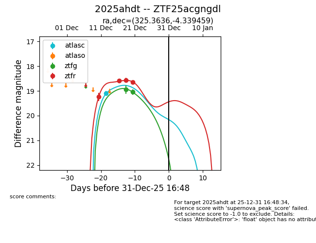
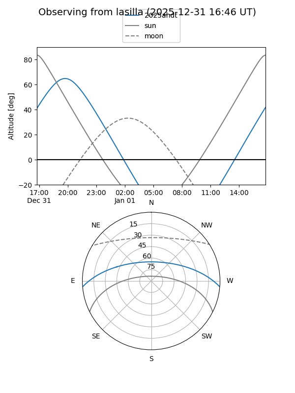
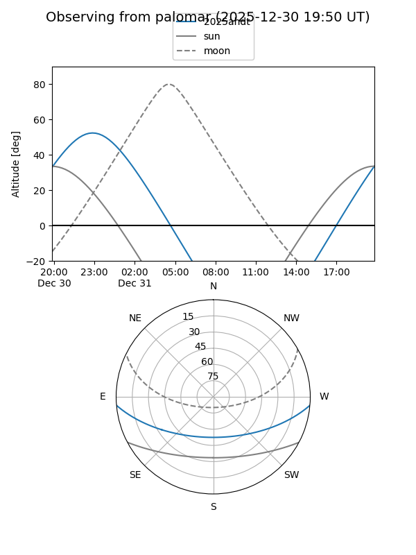
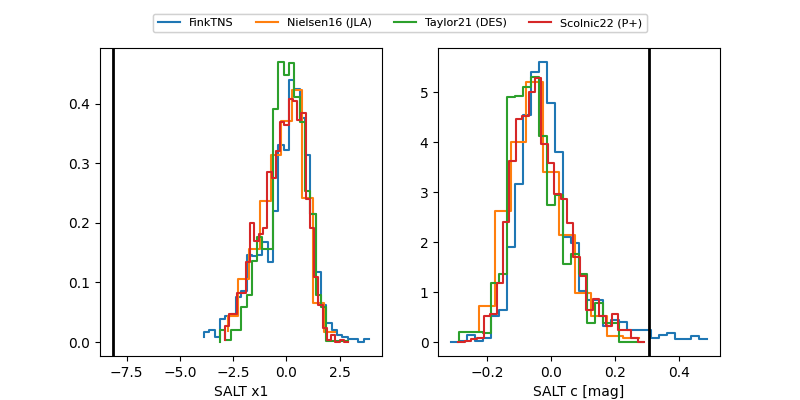

2025ahdt
Target 2025ahdt at 2025-12-22 20:48
Aliases and brokers:
FINK: fink-portal.org/ZTF25acgngdl
Lasair: lasair-ztf.lsst.ac.uk/objects/ZTF25acgngdl
ALeRCE: alerce.online/object/ZTF25acgngdl
TNS: wis-tns.org/object/2025ahdt
YSE: ziggy.ucolick.org/yse/transient_detail/2025ahdt
alt names
ZTF25acgngdl (ztf,fink_ztf)
2025ahdt (tns,yse)
Coordinates:
equatorial (ra, dec) = 325.3636,-4.33946
equatorial (HMS+DMS) = 21:41:27.26,-04:20:22.05
galactic (l, b) = (51.0027,-39.35272)
Flags:
confirmed ia
Photometry:
last atlasc=19.09, ztfg=19.05, ztfr=18.65
1 atlasc, 2 ztfg, 4 ztfr detections
Lightcurve

Visibility


Additional plots
